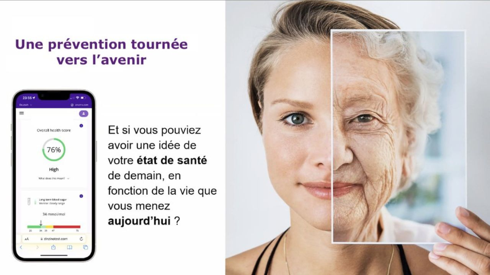
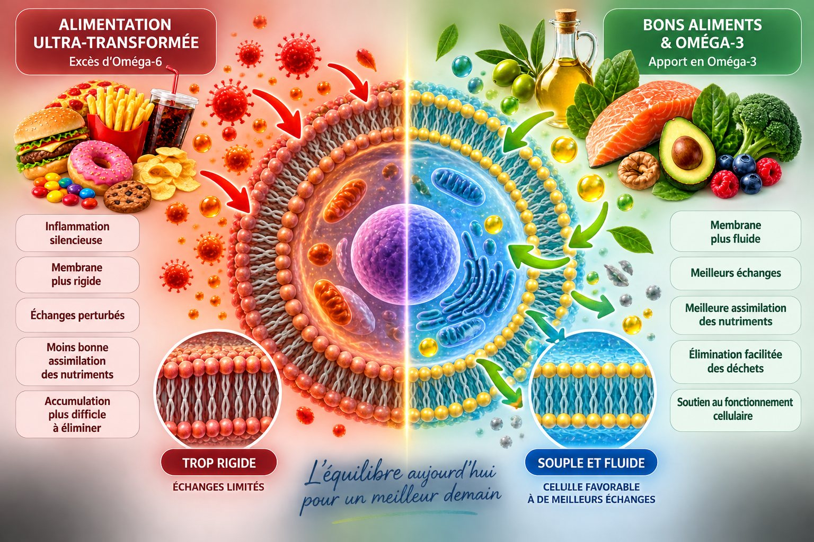
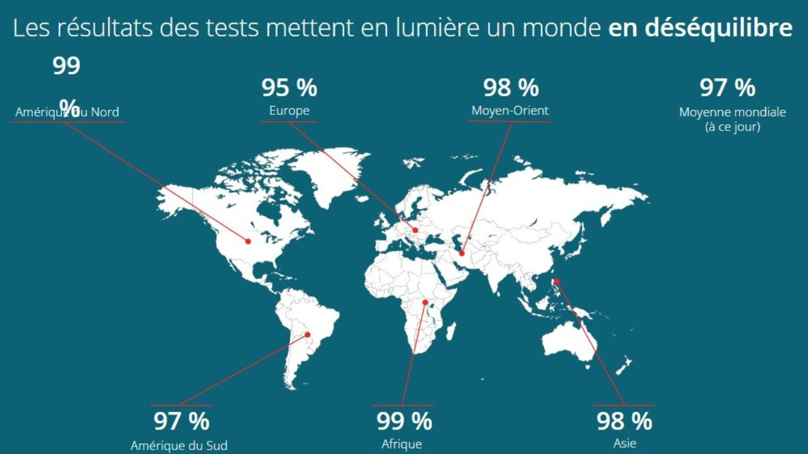
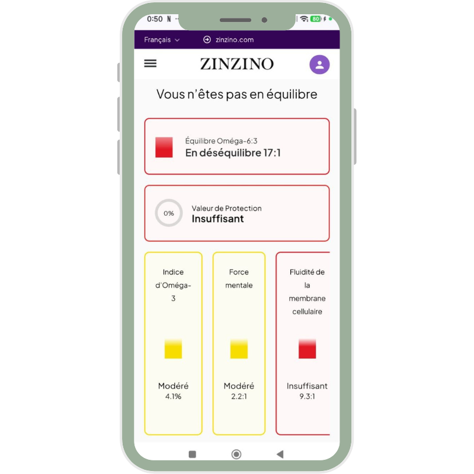
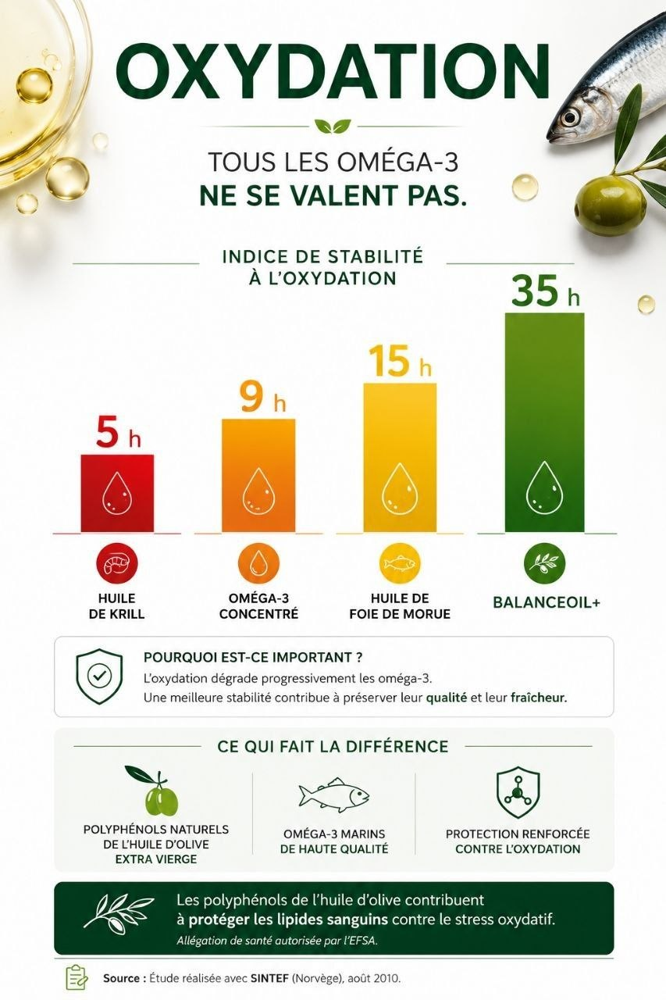
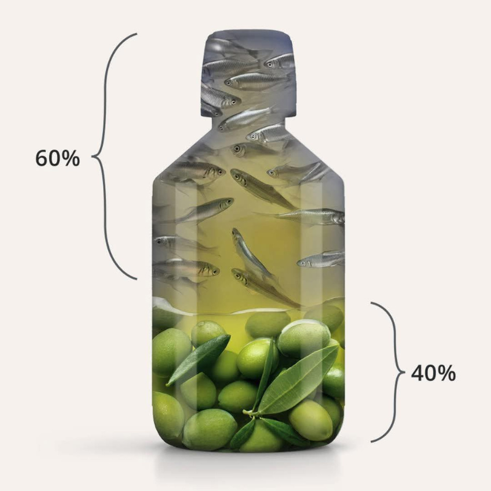
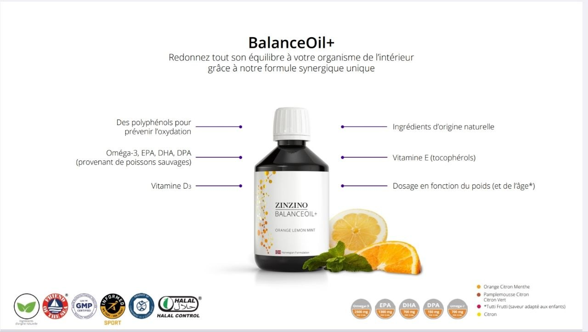
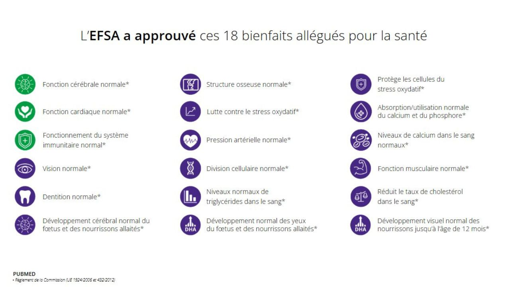

Agir aujourd'hui, c'est déjà prendre soin de demain.
Pas de solution miracle. Une démarche simple : comprendre ce qui se passe au cœur de ton corps, mesurer si nécessaire, agir, puis vérifier.
Quelqu'un a pensé à toi en te partageant cette page
« Ne devine pas. Mesure. »
Le principe qui guide toute la démarche
01 · Le constat
De plus en plus de personnes souffrent, de plus en plus tôt
Fatigue persistante, sommeil perturbé, douleurs, stress, baisse d'énergie… Beaucoup d'entre nous font attention à leur santé sans toujours obtenir les résultats espérés. Trois grandes familles de facteurs peuvent influencer ton équilibre cellulaire.
🍽️L'alimentation
Les produits ultra-transformés, l'excès de sucres, certaines graisses de mauvaise qualité et l'appauvrissement des sols ont progressivement modifié notre façon de manger. Ton alimentation moderne apporte souvent beaucoup d'énergie, mais pas toujours tous les nutriments dont tes cellules ont besoin.
💡 Une pomme des années 1950 équivaudrait à près de 100 pommes d'aujourd'hui en vitamine C — un exemple frappant de l'appauvrissement des sols.
🏭Ton environnement
Pollution atmosphérique, pesticides, perturbateurs endocriniens, métaux lourds, microplastiques : ton organisme évolue dans un environnement bien différent de celui de tes grands-parents. Même si nous ne pouvons pas tout contrôler, ces facteurs font désormais partie des éléments à prendre en compte.
🌙Ton mode de vie
Stress chronique, manque de sommeil, sédentarité, surcharge mentale ou rythme de vie soutenu peuvent, à long terme, perturber les mécanismes naturels de régulation et de récupération du corps.
🧬Pour aller plus loin : l'épigénétique
Nous ne choisissons pas les gènes dont nous héritons, mais la science montre que notre alimentation, notre sommeil, notre activité physique et notre environnement influencent la façon dont certains gènes s'expriment. L'épigénétique étudie précisément ces mécanismes qui modulent l'activité de nos gènes sans modifier notre ADN.
L'inflammation, par exemple, est un mécanisme naturel indispensable. Mais le stress chronique, la sédentarité ou certaines habitudes peuvent contribuer à la maintenir de façon prolongée. À l'inverse, ton organisme possède de nombreux systèmes de protection et de régulation, eux aussi influencés par ton mode de vie.
En résumé : ton patrimoine génétique constitue une base, mais tes habitudes quotidiennes participent à créer un environnement plus ou moins favorable au bon fonctionnement de tes cellules.
🤝Pour aller plus loin : qui se cache derrière ce site ?
Derrière ce site, il n'y a ni grande campagne publicitaire ni discours tout fait. Il y a un collectif d'hommes et de femmes issus d'horizons très différents, réunis par une même conviction : mieux comprendre son fonctionnement biologique permet de devenir acteur de sa santé.
Nous travaillons avec un laboratoire indépendant et utilisons un protocole scientifique développé et étudié à l'international depuis 2012. Notre objectif n'est pas de remplacer les professionnels de santé, mais d'apporter des informations accessibles, des outils de mesure et un accompagnement humain.
Libre à chacun d'explorer ces informations, de poser ses questions… ou simplement de refermer cette page en ayant appris quelque chose d'utile.
Mieux vaut prévenir que guérir.

Tu fais peut-être déjà attention à ton alimentation, tu pratiques une activité physique ou tu prends des compléments. C'est une excellente démarche. Pourtant, j'ai rencontré de nombreuses personnes très investies dans leur santé qui découvraient malgré tout certains déséquilibres invisibles.
Prendre soin de soi, c'est bien. Comprendre et vérifier, c'est encore mieux.
Nous ne pourrons pas changer notre environnement — mais nous pouvons adopter des routines qui créent un cercle vertueux d'amélioration et de mieux-être.
02 · Mieux comprendre pour mieux agir
L'inflammation chronique : silencieuse, persistante… mais pas une fatalité
Parmi les nombreux mécanismes qui influencent notre santé, l'équilibre entre les oméga-3 et les oméga-6 joue un rôle important dans la régulation de l'inflammation, le fonctionnement du cerveau, du cœur et de l'ensemble de l'organisme.
🛡️L'inflammation n'est pas toujours un problème
L'inflammation aiguë est indispensable : elle aide ton corps à réparer une blessure ou à se défendre contre une infection. En revanche, lorsqu'elle persiste à bas bruit pendant des mois, voire des années, elle peut progressivement perturber l'équilibre de l'organisme.
Cette inflammation dite « chronique » ou « silencieuse » n'entraîne pas forcément de symptômes immédiats, mais elle est aujourd'hui étudiée pour son implication dans de nombreuses situations liées au vieillissement et à la santé métabolique et cardiovasculaire. La graisse viscérale participe elle aussi à la production de substances inflammatoires.
⚠️Ce qui peut favoriser l'inflammation
Une alimentation riche en produits ultra-transformés, sucres raffinés et graisses de mauvaise qualité.
Un déséquilibre entre les oméga-6 et les oméga-3.
Le stress chronique et ses conséquences sur l'organisme.
Le manque de sommeil et la sédentarité.
Certains facteurs environnementaux.
Un microbiote fragilisé.
🌿Ce qui contribue à l'équilibre du corps
Une alimentation variée, riche en fruits, légumes et fibres.
Des apports suffisants en oméga-3.
Les polyphénols naturellement présents dans certains aliments.
Une bonne hydratation.
Une activité physique régulière.
Un sommeil réparateur.
Un microbiote diversifié.
Aucune solution unique ne peut tout résoudre : c'est l'accumulation de petites habitudes quotidiennes qui fait la différence sur le long terme.
Oméga-6 et Oméga-3 : deux acides gras essentiels, un équilibre vital
🔥
Oméga-6
Pro-inflammatoires
💧
Oméga-3
Anti-inflammatoires · protecteurs
Les oméga-3 et les oméga-6 sont dits « essentiels » parce que notre organisme ne sait pas les fabriquer seul. Ils doivent donc être apportés par l'alimentation. Contrairement à ce que l'on entend parfois, les oméga-6 ne sont pas « mauvais » : c'est leur équilibre avec les oméga-3 qui est déterminant.
🔥Les oméga-6 — où les trouve-t-on ?
Présents en grande quantité dans notre alimentation moderne :
Certaines huiles végétales (tournesol, maïs, soja).
Les produits ultra-transformés.
Une partie des viandes issues d'élevages intensifs.
Certains plats industriels et fast-foods.
Ils participent notamment aux mécanismes inflammatoires normaux de l'organisme.
💧Les oméga-3 — plus difficiles à trouver
Plus difficiles à trouver en quantité suffisante :
Sardines, maquereaux, harengs et autres petits poissons gras.
Noix, graines de lin et de chanvre.
Algues et certains végétaux.
Produits issus d'animaux élevés au pâturage.
Ils contribuent notamment au fonctionnement normal du cerveau et du système cardiovasculaire.
Le hic : les oméga-3 sont fragiles. Ils s'oxydent (rouillent) vite — au contact de l'air, de la lumière, de la chaleur. C'est précisément ce qui rend leur apport, et leur qualité, si délicats. On y revient juste après.
04 · L'histoire d'un déséquilibre
Nous avons bouleversé notre alimentation en moins d'un siècle
En un siècle, notre alimentation a radicalement changé — et avec elle, l'équilibre entre oméga-6 et oméga-3.
💡 Comment lire ces chiffres ? Un ratio de 3:1 signifie 3 oméga-6 pour 1 oméga-3. Plus le premier chiffre grimpe, plus le déséquilibre — et l'inflammation — augmentent.
Origines ancestrales
1:1
Idéal santé
≤ 3:1
Années 1960
4:1
Europe aujourd'hui
~15:1
Taux alarmants
30:1+
La science recommande un ratio inférieur à 3:1 pour offrir à tes cellules un terrain propice à une meilleure santé.
Sources scientifiques
Missouri Medicine, sept.–oct. 2021 — The importance of maintaining a low omega-6 / omega-3 ratio for reducing the risk of autoimmune diseases, asthma, and allergies.
Lipids in Health and Disease, 9 août 2025 — Global variations in omega-3 fatty acid status and omega-6:3 ratios.
05 · Ce que ça change dans ton corps
Tout se joue à la surface de tes cellules
Chaque cellule est entourée d'une membrane. Selon ce que tu lui apportes, elle devient plus rigide ou plus souple — et c'est ce qui décide si les nutriments entrent bien et si les déchets sortent bien.

06 · Et moi, où en suis-je ?
On ne peut pas le deviner à l'œil nu
Beaucoup de personnes sont concernées par ce déséquilibre sans le savoir. La bonne nouvelle : il existe un moyen simple de savoir si tu es personnellement en zone d'équilibre… ou de déséquilibre.
Seul un test peut te dire où tu en es vraiment.
97 %
Sur plus de 1 800 000 personnes ayant réalisé ce test, 97 % des premiers tests révélaient un déséquilibre oméga-6 / oméga-3.

Certains tests montrent des taux alarmants, à 58:1 et plus. Et ce n'est pas qu'une histoire d'assiette occidentale : même en Asie, où l'on consomme beaucoup de poisson, le déséquilibre est tout aussi présent — parfois davantage. La preuve que l'on peut « bien manger » et être malgré tout déséquilibré.
👀Ce que j'observe autour de moi
Parmi les personnes que j'ai vues testées, je n'en ai pas encore rencontré une seule en équilibre dès le premier test. Ce qui m'a le plus marquée : ce sont souvent les plus jeunes qui affichent les ratios les plus élevés. Un ratio de 30:1 chez une personne d'une vingtaine d'années n'a rien d'exceptionnel — même chez quelqu'un déjà supplémenté en oméga-3.
J'ai aussi vu des chiffres bien plus extrêmes : 58:1 chez une personne consommant beaucoup de sodas, et jusqu'à 120:1 sur l'un des tests. Des cas à tout âge, plus jeunes comme moins jeunes.
Ce sont mes observations de terrain. Chaque profil est différent : c'est justement pourquoi on commence par mesurer.
La seule façon de savoir où tu en es, ce n'est pas de le supposer. C'est de le mesurer.
07 · Mesurer avant d'agir
Connaître ton profil réel, en 6 étapes, depuis chez toi
Un test simple, réalisé chez toi avec quelques gouttes de sang, analysé par un laboratoire indépendant. Tu obtiens une photographie chiffrée de ton équilibre — ton véritable point de départ.
1
Test sanguin séché à domicile
Deux gouttes de sang séché suffisent pour obtenir tes données. Une procédure simple, rapide et indolore, à réaliser toi-même en toute sérénité.
Simple · Rapide · Indolore
2
Envoi par la poste à Oslo
Tu glisses ton échantillon dans la pochette de protection puis dans l'enveloppe fournie dans le kit — l'adresse du laboratoire est déjà indiquée dessus. Rien à imprimer : tu ajoutes simplement un timbre et tu la postes, direction la Norvège.
Enveloppe fournie · Adresse déjà indiquée
3
Analyse par le laboratoire VITAS (Norvège)
Ton échantillon est analysé à 100 % anonymement par un laboratoire indépendant certifié GMP, partenaire d'institutions de renommée mondiale (OMS, Harvard, Oxford, Cambridge).
Anonyme · IndépendantVoir le laboratoire VITAS
4
Tes résultats personnels en 15–20 jours
Accède à ton espace en ligne pour découvrir tes indicateurs : ton ratio oméga-6 / oméga-3, ta fluidité membranaire, ton indice d'oméga-3 et ton indice de force mentale.
Tableau de bord personnelVoir un exemple de résultats

5
Un protocole adapté à ton profil
Tes résultats permettent d'établir une routine quotidienne personnalisée, adaptée à ton poids et à tes besoins — le détail des produits est présenté juste après.
Sur-mesure
6
Le second test — la preuve chiffrée
Je ne te promets pas un équilibre en 120 jours : tout dépend de ton point de départ.Ce que je peux te dire, c'est que depuis l'arrivée des tests en France en mai 2024, toutes les personnes que j'ai accompagnées et qui ont mis en place le protocole ont amélioré leur ratio. Le second test le montre noir sur blanc.
La preuve mesurée
🔬Qu'est-ce qui est réellement analysé ?
Le test ne laisse rien au hasard : il analyse en détail 11 acides gras clés de ton corps pour te donner une vision claire de ton profil.
Tes indicateurs globaux (tableau de bord)
• L'équilibre oméga-6 / oméga-3 — le fameux ratio qui indique si ton terrain est équilibré ou non.
• La valeur de protection — l'indice global de défense de tes cellules.
• La fluidité de la membrane cellulaire — pour savoir si tes cellules laissent entrer les nutriments et sortir les toxines.
• L'indice d'oméga-3 — le taux d'oméga-3 protecteurs dans ton organisme.
• La force mentale — l'impact de cet équilibre sur tes fonctions cognitives et ton bien-être.
Le détail des acides gras mesurés
• Les oméga-3 (EPA, DHA, DPA, ALA).
• Les oméga-6 (acide linoléique, acide arachidonique…).
• Les oméga-9 (acide oléique).
• Les graisses saturées (acides palmitique et stéarique).
🎁Un accompagnement global et évolutif
🤝 Un accompagnement humain — le mien, et celui de tout un collectif
Le test n'est pas une fin en soi : c'est le point de départ. Ce qui change tout, c'est la petite habitude qu'on met en place ensuite — et le fait de ne pas rester seul·e pour la tenir.
Je t'accompagne personnellement, et tu rejoins aussi tout un collectif de personnes déjà passées par là : qui ont douté, testé, ajusté… et retrouvé leur équilibre. On partage ce qui marche, on s'encourage, on avance ensemble.
📘 Un ebook nutritionnel offert
En plus des résultats de ton test, tu reçois un ebook complet, avec des conseils nutritionnels précieux pour ajuster tes repas au quotidien, en parallèle du protocole.
⚖️ Une personnalisation selon ton profil
Pas de formule standardisée : le protocole est personnalisé en fonction de ton poids et de la forme de produit la plus adaptée à tes habitudes (huile, gélules…).
🔄 Le temps de la régénération cellulaire
Tes cellules ont besoin de temps pour se renouveler. C'est pourquoi un recontrôle est conseillé environ tous les 4 mois. Ce rythme laisse la biologie faire son œuvre et mesure l'impact réel de tes nouvelles habitudes.
💡 Lors des tests de suivi, tu observes l'effet concret de ton hygiène de vie. Par exemple, une consommation importante de sucre peut freiner l'amélioration de ta fluidité membranaire. Le test te permet de le voir, de comprendre et d'ajuster pas à pas.
Pourquoi je t'accompagne
Mon histoire
C'est mon expérience personnelle : elle n'est ni une promesse de résultat ni un traitement de la douleur.
Tu sais maintenant où tu en es. Reste à savoir quoi faire de cette information.
08 · Agir, avec la bonne qualité
Tous les oméga-3 ne se valent pas
Maintenant que tu sais que les oméga-3 sont essentiels, attention au réflexe : se rabattre sur n'importe quel oméga-3 du commerce, c'est risquer de jeter son argent — voire pire.
Un oméga-3 déjà oxydé (rouillé) est délétère : au lieu de protéger tes cellules, il leur apporte de l'oxydation. C'est comme avaler de la rouille. D'où une seule règle : vérifier l'efficacité réelle, et choisir une huile protégée de l'oxydation.

Le problème des oméga-3 classiques
Oméga-3 du commerce
La dépollution du poisson supprime les polyphénols. Sans protection, les oméga-3 s'oxydent (rouillent) avant même d'atteindre tes cellules.
Une huile pensée autrement
BalanceOil+ : 60 % poisson + 40 % olive
Petits poissons sauvages + huile d'olive extra-vierge de récolte précoce (Méditerranée). Ses polyphénols spécifiques protègent les oméga-3 et les acheminent intacts jusqu'à tes cellules. Son efficacité se mesure : depuis mai 2024, toutes les personnes que j'ai accompagnées avec ce protocole ont amélioré leur ratio — le second test le prouve.


Un oméga-3 à spectre complet
Des teneurs optimales en EPA et DHA pour un indice oméga-3 normal, issues de poissons gras sauvages pêchés durablement.
Oméga-3
2478
mg / 12 ml
EPA
1283
mg / 12 ml
DHA
683
mg / 12 ml
DPA
150
mg / 12 ml
Oméga-7
700
mg / 12 ml
Contient aussi de l'oméga-9 (acide oléique, issu de l'olive), des polyphénols d'olive et de la vitamine D3 (400 % des VNR).
✅Les allégations de santé autorisées
Les nutriments présents dans la formule (oméga-3, vitamine D, vitamine E…) bénéficient de plusieurs allégations de santé autorisées par l'EFSA, sous réserve des conditions d'utilisation prévues par la réglementation européenne.
Allégations de santé autorisées (UE) : le DHA contribue au maintien d'une fonction cérébrale normale ; le DHA contribue au maintien d'une vision normale ; l'EPA et le DHA contribuent à une fonction cardiaque normale ; la vitamine D contribue au fonctionnement normal du système immunitaire et au maintien d'une fonction musculaire normale ; les polyphénols de l'olive contribuent à la protection des lipides sanguins contre le stress oxydatif. Ces bienfaits s'obtiennent avec une consommation journalière conforme aux quantités indiquées par la réglementation.

🏅Qualité, fraîcheur et pureté validées
Contrôles et certifications internationales : Informed Sport, Friend of the Sea, GMP — Lýsi HF, Cologne List.
Les compléments alimentaires ne remplacent pas une alimentation variée et équilibrée ni un mode de vie sain. Si tu prends des anticoagulants, demande conseil à ton médecin.
🔬Un concept validé par la recherche
Les formules ne sont pas de simples compléments à la mode : chaque formule est pensée par le comité scientifique de la marque, avec des chercheurs et médecins de référence.
Dr. Paul Clayton — pharmacologue clinicien britannique, pionnier de la pharmaco-nutrition. Il a notamment été en charge de la pharmacovigilance au Royaume-Uni et a conseillé les autorités sur les questions de nutrition et de santé publique. Son travail relie alimentation, inflammation et prévention des maladies chroniques.
Derrière ce test, ces huiles et les produits qui viendront ensuite, il y a une entreprise : Zinzino.
J'ai choisi de recommander ce test, ces huiles et cette gamme parce que je crois dans la démarche de cette entreprise. Je suis partenaire indépendante de la marque — c'est-à-dire à mon compte, libre de mon activité — et j'en suis aussi consommatrice au quotidien.
Je partage seulement ce que j'ai vérifié et testé sur moi-même.J'ai fait mes recherches sur le sérieux de ces produits et sur leur efficacité, et je les utilise au quotidien : le BalanceOil+ depuis plus de deux ans, et la phycocyanine (que je t'explique plus loin) depuis douze ans. J'ai aussi vu de vrais résultats autour de moi.
Et c'est enfin une question de sérieux : une société installée depuis une vingtaine d'années, avec de nombreux clients, un service après-vente joignable en plusieurs langues et un environnement sécurisé. Pour moi, ça compte autant que la qualité des produits.
En toute transparence : lorsqu'une commande est passée via mon site ou via mon lien partenaire, je suis rémunérée par la marque. C'est précisément ce qui me permet de t'offrir mon accompagnement — un échange simple et transparent, sans que cela change quoi que ce soit à ton prix.
09 · Par où commencer
La porte d'entrée : le BalanceOil+ & ton BalanceTest
Un seul geste essentiel pour démarrer : soutenir la souplesse de tes membranes avec le BalanceOil+ ET te rapprocher de l'équilibre recherché, et mesurer ton point de départ avec le BalanceTest. Tout le reste vient ensuite, selon tes besoins.
Le kit premier
BalanceOil+ & BalanceTest
C'est ce qui aide à retrouver de la souplesse au niveau des membranes : l'oméga-3 protégé par les polyphénols d'olive, plus la mesure avant/après pour ne plus jamais avancer à l'aveugle.
Soutient la souplesse des membranes cellulaires
Mesure ton ratio oméga-6:3 réel, en chiffres
Une preuve concrète de l'efficacité en 120 jours
Le socle indispensable avant tout le reste
À chacun sa formule, trouve la tienne
L'efficacité de fond reste la même — à toi de choisir le format qui colle à ton quotidien.
💡 Détail pratique : toutes les versions liquides se conservent au frigo après ouverture.
🍊BalanceOil+ Classique — pour toute la famille
La formule de base, avec plusieurs goûts au choix :
Citron — mon préféré !
Orange-Citron-Menthe — le plus apprécié
Pamplemousse-Citron vert
Tutti Frutti — plus pour les enfants
🛡️BalanceOil+ Premium — protection renforcée
Une formule plus concentrée en polyphénols (antioxydants). Elle convient particulièrement aux fumeurs, aux personnes qui ont des problèmes de santé, ou à celles qui veulent renforcer leur apport en antioxydants.
💧AquaX — la version qui se mélange à l'eau
Formule hydrosoluble : elle se mélange facilement à un jus ou à de l'eau. Idéale si tu n'aimes pas la texture huileuse. Elle est aussi indispensable pour les personnes qui n'ont plus de vésicule biliaire.
🌱BalanceOil+ Vegan — 100 % végétal
L'alternative entièrement végétale, avec des oméga-3 directement issus d'algues.
💊Essent+ (gélules) — sans goût, ultra-pratique
Le format parfait pour ne pas couper ta routine en déplacement.
🌍 Un œil sur demain : pour préserver les océans, la version Vegan (à base d'algues cultivées de manière écoresponsable) représente l'avenir des oméga-3 — une source durable et indépendante de la pêche.
10 · Une parenthèse sur mon accompagnement
Tu as la base. Maintenant, c'est toi qui choisis
Je t'ai présenté l'importance de l'équilibre entre oméga-3 et oméga-6, et l'idée d'arrêter de deviner pour commencer à mesurer. À partir d'ici, tu as le choix.
💬
On échange ensemble
Tu préfères qu'on avance à deux ? Écris-moi, je réponds personnellement et je t'oriente selon ton profil.
🧭
Tu découvres à ton rythme
Tu veux explorer par toi-même ? Continue la lecture : je reste présente si tu as la moindre question.
L'huile reste la base 🫒
Tout ce qui suit ne vient pas remplacer l'huile, mais la compléter, en synergie avec elle. Garde ça en tête : l'huile, c'est le socle.
Nous sommes en manque d'oméga-3 : il faut donc les apporter chaque jour, avec une source de qualité qui ne s'oxyde pas et qui fait réellement son travail. C'est une base accessible — tu verras plus loin comment démarrer.
Une fois la base posée, qu'est-ce qu'on peut faire de plus ?
Au-delà d'un bon sommeil et d'une alimentation équilibrée, certains besoins précis méritent un accompagnement particulier :
💥 Des douleurs
🌧️ Le moral en berne
🤧 Des allergies
🏃 Mieux récupérer (sport)
🌿 Bien vieillir
✨ Prendre soin de sa peau
⚖️ Accompagner une perte de poids
🧒 Les enfants
🤰 La maternité
Je te présente juste après mes indispensables, ceux qui viennent en complément de l'huile.
Une fois la base posée, certaines solutions viennent en synergie avec l'huile. Voici comment je vois les choses, et les alliés que j'utilise moi-même.
Le concept de santé cellulaire
Pollution, stress, alimentation appauvrie, manque de sommeil… nos cellules sont sollicitées chaque jour. L'idée de la nutrition cellulaire est simple : apporter à ton organisme les éléments dont il a besoin pour fonctionner dans les meilleures conditions.
Poser d'abord la base — l'équilibre oméga — reste ma recommandation prioritaire. Mais si tes moyens te le permettent, tu peux tout à fait commencer plusieurs solutions en parallèle : les effets se cumulent, et les résultats peuvent arriver plus rapidement. Ces solutions complètent les bases indispensables — alimentation, mouvement, sommeil, gestion du stress — sans jamais s'y substituer.
Pour moi, quatre piliers sont essentiels
🫧
Membranes souples
Préserver la fluidité des membranes grâce aux oméga-3.
🥦
Nourrir
Apporter les nutriments parfois insuffisants dans l'alimentation.
♻️
Éliminer
Soutenir les mécanismes naturels d'élimination du corps.
💧
Hydrater
Favoriser une bonne hydratation et l'énergie cellulaire.
Les alliés que j'utilise personnellement
Voici les outils que j'utilise depuis des années et que je recommande selon les besoins et les priorités de chacun.
⭐💧La filtration de l'eau — mon indispensable n°1
L'hydratation est la base de tout. C'est le premier changement que j'ai mis en place il y a plus de douze ans, et probablement le plus simple à adopter. J'utilise une carafe filtrante alcalinisante pour l'eau de boisson et de cuisson.
Réduction de nombreux contaminants (chlore, pesticides, microplastiques, métaux lourds).
Un meilleur goût.
Une vraie alternative aux bouteilles plastique.
💡 Selon une étude australienne, les personnes qui consomment régulièrement de l'eau en bouteille plastique avaleraient, sans le savoir, l'équivalent d'une carte de crédit en plastique chaque semaine.
⭐🔵PhycoSci+ — la phycocyanine, mon favori depuis 12 ans
📷 photo à venir phycosci.png
La phycocyanine, ce pigment bleu extrait de la spiruline, est le produit qui m'accompagne depuis le plus longtemps. Aujourd'hui encore, c'est l'un de mes indispensables — pour l'énergie du matin sans effet excitant, la clarté mentale, la récupération et le confort au quotidien.
Ce que j'ai personnellement observé, au fil des années :
Plus d'énergie
Un meilleur sommeil
Un meilleur moral
Une diminution de mes douleurs
Moins de symptômes d'allergie
« La phycocyanine m'a permis de ne plus simplement subir le rythme intense de ma vie d'infirmière. J'y ai trouvé un regain d'énergie, une meilleure récupération et un sommeil plus serein. »
« Ces dernières semaines, comme je me sentais bien, j'en avais un peu moins pris. La canicule était passée, il faisait doux — et pourtant, de grosses bouffées de chaleur sont revenues, alors que d'habitude je n'en souffre pas particulièrement. Pour moi, en pleine ménopause, le lien était assez parlant. »
C'est mon expérience personnelle : elle n'est ni une promesse de résultat, ni un avis médical. Chaque personne est différente.
🟡X-Gold+ — le curcuma nouvelle génération
📷 photo à venir xgold.png
Cette formule liquide utilise le totum de la plante de curcuma (plus de 300 principes actifs) sous une forme exceptionnellement bien assimilée par le corps. Je le recommande particulièrement pour :
Soutenir le confort articulaire ou musculaire au quotidien.
Prendre soin du confort digestif.
Intégrer davantage d'antioxydants dans sa routine.
🌿Les alliés du quotidien
Selon tes besoins, tu peux compléter ta routine avec ces solutions ciblées :
ZinoBiotic+ — un mélange de fibres prébiotiques destiné à nourrir les bonnes bactéries de ton intestin, ton « deuxième cerveau ».
Xtend+ ou SpiruMax+ — deux solutions riches en vitamines et oligo-éléments pour compléter une alimentation parfois insuffisamment variée.
Viva+ — une formule à base de safran, souvent appréciée pendant les périodes de stress, de fatigue mentale ou lorsque le sommeil devient plus fragile.
12 · Une réponse pour chaque besoin
Explore les différentes catégories
Au-delà de l'équilibre oméga, toute une gamme pensée pour la prévention et le bien-être. Clique sur une catégorie pour la découvrir dans ma boutique.
Tu as pris le temps de comprendre ce qui se joue dans tes cellules. La suite dépend de toi : certains veulent simplement vérifier leur équilibre, d'autres mettre en place une routine complète. Mon rôle n'est pas de te convaincre, mais de t'aider à choisir ce qui correspond à tes besoins et à ton budget.
🔓Un abonnement flexible, sans engagement
Pour bénéficier des tarifs abonnés (jusqu'à 60 % de moins que les prix publics), il suffit de choisir un kit premier. L'abonnement est ensuite sans engagement de durée : pour l'arrêter, un simple préavis de 30 jours, d'un clic dans ton espace client.
Livraison tous les 2 mois (une organisation pensée pour limiter les transports). À partir du 7ᵉ mois, ta fidélité est récompensée : +10 % de la valeur de tes commandes en produits offerts.
⏳Pourquoi un minimum de 4 mois ?
Les membranes de nos cellules se renouvellent progressivement. Un suivi sur plusieurs mois permet d'observer l'évolution de ton équilibre grâce au second test. C'est le temps nécessaire pour laisser la biologie faire son œuvre.
🚚Les frais de port
9 € à la première commande, puis 4,50 € par mois (une livraison tous les 2 mois). Qu'il y ait 1 ou 5 produits dans ton panier, ces frais restent uniques — et avec le programme fidélité (en abonnement), ils te sont remboursés en produits offerts.
💶Au détail ou en abonnement : le bon réflexe
Acheté seul, au détail, un test coûte 189 €. Dans un kit premier, il devient bien plus avantageux — souvent inclus ou fortement réduit.
Même logique pour l'huile : au prix public (achat unique), un flacon est à 61 € ; avec l'abonnement, il passe à 43 €. C'est tout l'intérêt de démarrer directement avec un kit et l'abonnement.
🎁Tous les avantages de l'abonnement
En choisissant l'abonnement (toujours sans engagement de durée), tu profites de plusieurs avantages qui se cumulent :
Des prix réduits sur toute la gamme (jusqu'à 60 % de moins que les prix publics).
Les frais de port remboursés en produits offerts (via le programme fidélité).
+10 % de chaque commande en produits offerts, dès le 7ᵉ mois d'abonnement.
Les autres produits au tarif abonné, même achetés à l'unité.
Le programme de recommandation : en partageant autour de toi, tes produits peuvent devenir partiellement, voire totalement autofinancés.
« Je veux juste faire le test, sans rien d'autre »
C'est une réaction que je comprends : vouloir vérifier avant d'agir, c'est sain. Mais je préfère être honnête avec toi, chiffres en main.
Le test seul
189 €
Non remboursable
Aucun produit
Pas de second test
S'il révèle un déséquilibre : tout reste à faire
Le kit test + huile
215 €
Remboursé si tu es déjà en équilibre
2 mois et plus d'huile (selon ton poids)
Second test offert à 4 mois*
Tu agis dès le premier jour
26 € de plus — et c'est pourtant la seule option qui ne te fait courir aucun risque, puisque c'est la seule qui soit remboursable. Il y a aussi une raison de fond : un test qui n'est suivi d'aucun changement ne sert à rien. Ce qui fait la différence, ce n'est pas le chiffre — c'est la petite habitude qu'on met en place ensuite, et le fait de ne pas être seul·e pour la tenir. Cela dit, si tu préfères vraiment le test seul, c'est ton choix et je te l'organise volontiers. Écris-moi.
* Le second test est envoyé après le kit premier suivi de 4 mensualités.
14 · Par où commencer concrètement
Choisis ton point de départ
Voici les kits que je recommande le plus souvent. Tu commandes directement auprès de la société — moi, je m'assure que tu sois bien accompagné·e. Pour n'importe lequel, écris-moi : je te réponds avec le lien de commande adapté.
★ Le plus choisi
Oméga-3 + tests
Kit premier BalanceOil+ · 2 tests inclus
2 flacons BalanceOil+ 300 ml + 2 flacons 100 ml + 1 test reçu avec la 1ʳᵉ livraison, puis 1 test 4 mois après.
215 €1er paiement
206 € (kit) + 9 € port
47,50 €puis par mois
43 € — 1 flacon 300 ml BalanceOil+ · + 4,50 € port
💧 Remboursé si ton 1ᵉʳ test te montre déjà en équilibre.
🧪 2ᵉ test offert à 4 mois (kit premier + 4 mensualités).
📉 Chaque mois : le flacon BalanceOil+ passe de 61 € à 43 €.
Je te réponds avec le lien de commande adapté et je m'assure que tu sois bien rattaché·e à la personne qui t'a invité·e.
Et pour aller plus loin ?
Tu as peut-être un besoin plus précis : apporter des nutriments, soutenir le confort articulaire, retrouver du moral et de la clarté, prendre soin de ton microbiote… Il existe des solutions ciblées — mais je ne crois pas qu'il faille tout commencer en même temps.
C'est justement là que mon rôle prend tout son sens : selon ton besoin et ton budget, on construit ensemble ce qui te correspond vraiment. Sans surcoût — mes conseils et mon temps te sont offerts — et souvent, ça t'évite d'acheter des choses qui finiraient dans un placard.
Pendant six ans, j'ai pris des oméga-3 classiques, persuadée de bien faire. Puis j'ai décidé d'arrêter de deviner et de mesurer. Le résultat de mon premier test a été un véritable électrochoc.
Mon évolution depuis le début de mon protocole
17:1
Avant déséquilibre important
→
4:1
Après 6 mois retour progressif
→
1,9:1
Après 18 mois équilibre durable
Au-delà des chiffres, chacun vit son propre parcours. Le corps mobilise ses ressources là où il en a le plus besoin, à son rythme. Quand j'ai testé ma fille, elle était à 15:1 — je l'avais davantage supplémentée en oméga-3 que moi, alors elle s'en sortait mieux que les filles de son âge, sans être en équilibre pour autant. Une copine à elle, du même âge à 15 jours près, était à 30:1 — et j'ai vu beaucoup de jeunes autour de 25 à 30:1.
Pourquoi cette démarche m'a convaincue
Avec mon regard d'ancienne infirmière, trois critères étaient indispensables.
🔬
Un laboratoire indépendant
Les analyses sont réalisées de manière anonyme par VITAS, laboratoire indépendant reconnu au niveau international.
🛡️
Une protection contre l'oxydation
Les oméga-3 sont fragiles. Associés aux polyphénols d'olive, ils arrivent non oxydés jusqu'à nos cellules.
👨🔬
Un comité scientifique reconnu
Des chercheurs et médecins participent au développement et au suivi scientifique des formules (détail au bloc solution).
Je ne suis pas la seule
Les témoignages qui suivent reflètent des expériences personnelles. Chaque personne est différente et les ressentis peuvent varier. Ce qui rend cette démarche particulière, c'est qu'elle s'appuie aussi sur des mesures biologiques objectives.
« Mon premier BalanceTest a montré un ratio de 58:1, ce qui m'a surprise. Après un an de BalanceOil+, mon test de suivi a montré un ratio de 5:1. J'ai hâte de découvrir mon prochain test. »
Heike Schwiedeßen, 77 ans
Entrepreneuse, Autriche
« Je prends BalanceOil+ et ZinoBiotic+ tous les jours. Au départ, j'étais sceptique. Aujourd'hui, je me sens plus motivée et ils s'intègrent à mon mode de vie sportif. »
Theresa Moser, 31 ans
Enseignante et triathlète, Autriche
« Cela fait un an que j'ai décidé d'investir dans ma santé et je suis satisfaite. Les oméga-3 EPA et DHA de BalanceOil+ contribuent au maintien d'une fonction cardiaque et cérébrale normale. »
Au-delà des chiffres, chaque parcours est unique. C'est toujours le corps qui décide où il a le plus besoin de retrouver son équilibre.
16 · Derrière cette démarche
Choisir un complément, c'est aussi choisir l'entreprise
Voici quelques repères factuels pour mieux comprendre l'écosystème derrière cette démarche.
📷 photo à venir hilde-orjan.jpg
Hilde & Örjan Saele
Un couple norvégien qui a fondé l'entreprise en Scandinavie, avec une conviction simple : rendre la prévention santé accessible, mesurable et humaine.
2005
Une entreprise établie
Fondée en Scandinavie il y a plus de vingt ans — nutrition personnalisée et prévention.
2012
La mesure au cœur
Une approche fondée sur les autotests sanguins et le suivi dans le temps.
2014
Cotée en bourse
Au Nasdaq First North (Stockholm). Obligations de transparence et résultats publiés.
1 M
Clients en abonnement
En 2025, le cap du million de clients abonnés dans le monde est franchi.
100
Pays
Une présence internationale dans une centaine de pays, qui se poursuit.
« Mesurer plutôt que promettre. »
Données publiques issues des rapports financiers de l'entreprise (cotation Nasdaq First North). Les chiffres de croissance et de présence évoluent dans le temps.
Certaines personnes utilisent simplement les produits. D'autres décident de partager cette démarche et d'en faire une activité digitale complémentaire, compatible avec leur mode de vie — recommander ce qui les a aidées, tout simplement. J'ai une page dédiée à ça.
Tu viens de recevoir une information utile. Peut-être qu'une personne autour de toi la mérite aussi. Connais-tu quelqu'un…
💥qui souffre au quotidien ?
🌙qui dort mal ?
⚡qui se sent stressé·e ou fatigué·e ?
🌿qui prend soin de sa santé naturellement ?
🏃qui fait du sport et veut mieux récupérer ?
💧qui fait attention à ce qu'il·elle boit et mange ?
Si un visage t'est venu, c'est peut-être à cette personne que ça rendrait service. Tu peux simplement lui transmettre l'info — sans rien attendre en retour.
Partager, en un geste
Un message est déjà prêt — tu n'as qu'à choisir ton moyen préféré. Libre à toi de le personnaliser avant d'envoyer.
Et si, plus tard, tu constates toi-même de vrais résultats, il se peut que tu aies naturellement envie d'en parler. Ce partage-là, désintéressé au départ, peut aussi te récompenser : à partir de 4 produits achetés par les personnes que tu réfères, tu peux recevoir un ou plusieurs produits offerts chaque mois. Pas besoin de vendre — juste de partager ton expérience vraie.
🙂
Toi
Tes résultats parlent. Tu en parles naturellement à un proche.
→
🤝
Un proche
Il fait son test et son premier achat grâce à toi.
→
🎁
Tu reçois
Un ou plusieurs produits offerts chaque mois, sans frais.
18 · Questions fréquentes
Ce qu'on me demande le plus souvent
Si ta question n'est pas là, écris-moi : je réponds personnellement.
💊Dois-je arrêter mes traitements ?
Surtout pas. Rien de ce que je propose ne remplace un traitement, un avis ou un suivi médical — et personne ne doit modifier une prescription sans en parler à son médecin.
Il s'agit d'une démarche d'hygiène de vie et de prévention, qui vient en complément de ton suivi habituel, jamais à sa place.
Deux précautions concrètes : si tu prends des anticoagulants, demande l'avis de ton médecin avant de commencer. Et en cas de doute, de pathologie ou de grossesse, la bonne personne à consulter reste ton professionnel de santé.
💶Combien coûte le test ?
Acheté seul, le test coûte 189 € et n'est pas remboursable.
Dans le kit test + huile (215 €), il est accompagné de 2 mois et plus d'huile, d'un second test offert à 4 mois — et surtout le kit t'est remboursé si ton premier test montre que tu es déjà en équilibre.
Autrement dit : 26 € de plus, et c'est la seule option qui ne te fait courir aucun risque. Le détail est dans le comparatif « je veux juste faire le test » plus haut.
💰« C'est cher » — parlons-en franchement
C'est une objection parfaitement légitime. Alors parlons chiffres, sans détour.
Le protocole complet — l'huile et les deux tests — revient à moins de 2 € par jour. C'est un café au comptoir.
Mais je crois que la vraie question n'est pas « combien ça coûte ». C'est « est-ce que je dépense bien ? »
Ce qui coûte vraiment cher, c'est d'acheter au hasard.J'y suis passée : six ans d'oméga-3 de bonne qualité, persuadée de bien faire… et un premier test à 17:1. Six ans à payer pour quelque chose qui n'arrivait pas jusqu'à mes cellules. Mesurer, c'est justement arrêter de gaspiller.
Ce qui n'est pas dans le prix : mon temps, mon accompagnement, et les ressources de toute une équipe derrière moi. Tu ne paies que les produits — le reste t'est offert, que tu commandes ou non.
Et si c'est vraiment un souci financier : écris-moi. Sans gêne, c'est important. On regarde ensemble ce qui est possible : commencer plus petit, avancer autrement, ou utiliser le programme de recommandation pour autofinancer tes produits. Je préfère mille fois qu'on en parle plutôt que de te voir renoncer en silence.
Et si ce n'est pas le moment, c'est très bien aussi. Tu auras appris quelque chose d'utile en passant par ici, et je serai là si un jour tu changes d'avis.
⏳Combien de temps faut-il ?
Tes résultats arrivent sous 15 à 20 jours après l'envoi du test.
Ensuite, compte 4 mois minimum : c'est le temps dont tes cellules ont besoin pour se renouveler. C'est pour cela que le second test est envoyé à ce moment-là — avant, il ne montrerait pas grand-chose.
Je ne te promets pas d'équilibre en 120 jours : tout dépend de ton point de départ. Quelqu'un qui part de 30:1 n'a pas le même chemin que quelqu'un qui part de 6:1.
🏃Est-ce réservé aux sportifs ?
Pas du tout. Nos cellules ne demandent pas de licence sportive.
J'accompagne des personnes de tous profils : des actifs débordés, des retraités, des jeunes, des soignants, des personnes qui ne font aucun sport. Ma fille a fait le test à 20 ans, mon premier client à près de 70.
Le déséquilibre oméga ne fait pas de tri : il concerne aussi bien le sportif assidu que la personne sédentaire. C'est bien pour ça qu'on mesure plutôt que de deviner.
🍽️Puis-je continuer mon alimentation habituelle ?
Oui. Il n'y a ni régime, ni interdit, ni liste d'aliments à bannir. Je ne crois pas aux démarches qui commencent par tout supprimer : elles ne tiennent pas dans le temps.
Une petite habitude quotidienne, c'est tout. Le reste, tu l'ajustes à ton rythme — et l'ebook nutritionnel offert avec ton test te donne des pistes concrètes.
Le second test te montrera d'ailleurs l'effet réel de ton hygiène de vie : par exemple, une consommation importante de sucre peut freiner l'amélioration de ta fluidité membranaire. Tu le vois, tu comprends, tu ajustes. Sans culpabilité.
🛒Dois-je acheter des produits ?
Tu n'es obligé·e à rien. Tu peux parcourir ce site, apprendre deux ou trois choses utiles et repartir — c'est déjà très bien.
Mais je préfère être franche : je suis partenaire indépendante de la marque dont je parle ici, et si tu commandes via mes liens, cela contribue à mon activité. Tu le sais, c'est plus sain ainsi.
Une chose à savoir : tu n'achètes rien à moi — ta commande se fait directement auprès de la société, sur son site, avec son service client et ses garanties. Et de mon côté, mon accompagnement et le temps que je te consacre te sont offerts, que tu commandes ou non.
Ce que je ne ferai pas, c'est te vendre quelque chose dont tu n'as pas besoin. C'est bien pour ça que je commence par te proposer de mesurer : si ton test montre que tu es déjà en équilibre, je te le dirai, et tu continueras simplement ce que tu fais déjà.
🔬Pourquoi mesurer plutôt que deviner ?
Parce que j'y suis passée. Pendant six ans, j'ai pris des oméga-3 de qualité en étant persuadée de bien faire. Mon premier test : 17:1. J'étais loin du compte, et je ne le savais pas.
Le corps n'envoie pas de signal clair pour ce genre de déséquilibre. On peut manger sainement, faire du sport, prendre des compléments… et être malgré tout déséquilibré·e. J'ai vu des sportifs, des naturopathes, des personnes très attentives à leur santé découvrir des résultats auxquels elles ne s'attendaient pas.
Mesurer, c'est arrêter de payer pour quelque chose dont on ignore l'effet. Et c'est la seule façon de vérifier que ce que tu mets en place fonctionne vraiment — noir sur blanc, avant et après.
Une question ? Écris-moi directement sur WhatsApp, je réponds personnellement — clique sur le bouton vert en bas de ton écran.
Ce n'est pas une question de miracle. C'est une question de constance — maintenir la santé cellulaire à son niveau optimal.
Une prévention tournée vers l'avenir
Agir aujourd'hui, c'est déjà prendre soin de demain.
Chaque jour compte pour tes cellules. Mesurer ton profil, puis mettre en place une petite habitude, c'est déjà agir concrètement sur ce qui dépend de toi.
Que tu aies été invité·e par un proche, que tu souhaites réaliser un test ou simplement poser une question, je serai heureuse d'échanger avec toi — sans engagement et à ton rythme.